Material Setup in CRYENGINE
Now we have our asset configured correctly, let's move on to the CRYENGINE side of preparing the asset to be used for production. Have an existing level open or create an empty level as the testing area for this asset.
Material
First, open the Material Editor and go to the tutorial_boolean_destruction material under:
<Your_Project>\Assets\Objects\tutorial\vegetation\05\tree\boolean_destruction\
If the export process went OK for the material and geometry, you should have the material as shown. Note down the correct folder structure and also the same SubId setup that we configured in the 3dsMax. A lot of the fields have been filled out already through the export process (note the "Diffuse" and "Normalmap" texture paths already filled in). But there is still a few options that we need to set ourselves.
3dsMax has no concept of a surface type or shader type for example, so we can only define so much with 3dsMax material editor.
The rest is completed here in the CRYENGINE Material Editor.
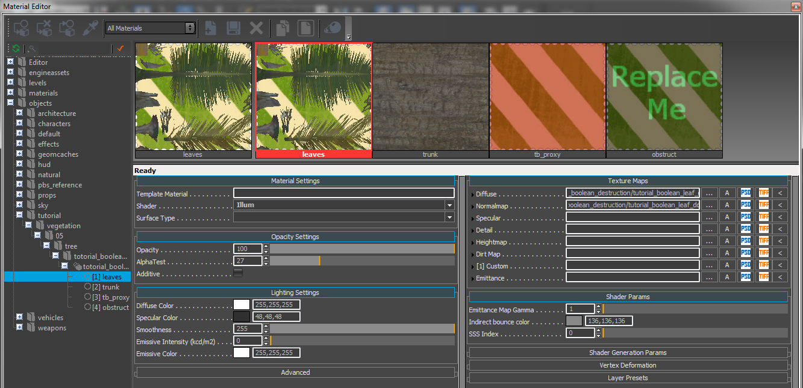
Pic1: Initial Material Editor overview
We will start with Id1 and configure the material settings to make the asset behave correctly for CRYENGINE.
Material Settings Id1 (leaves)
We only have to change 2 settings here, the Shader and Surface Type. The shader we want to use is the Vegetation shader and the surface type is also Vegetation. Select both from the drop down lists.
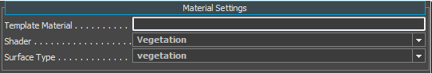
Pic2: Material settings
Lighting
Under the Lighting Settings, we can find the color parameters. To be correctly in line with the PBS pipeline, we have to:
- set our "Diffuse Color" to pure white 255,255,255
- set the "Specular Color" within the 40 - 60 range (dark grey)
- set the "Smoothness" slider to 255 max because we are controlling this value through the normalmap's alpha channel (ddna).
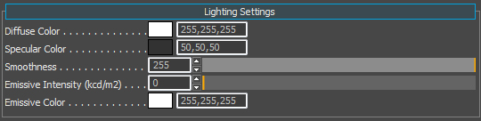
Pic3: Lighting Settings
Texture Maps
The Texture Maps section should already have been filled out with our "Diffuse" (*_diff.tif) and our "Normalmap" (*_ddna.tif).
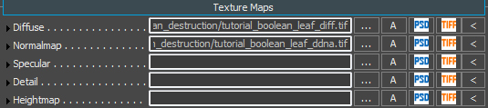
Pic4: Texture maps
Shader Generation Params
This tab in the Material Editor will show you different options depending on the shader type you assign to this material SubId. Since we have selected the vegetation shader, it has exposed the options that apply to the vegetation. To continue, check the box for the "Leaves" (since we want our asset to run through the higher quality pipeline.) and the Detail bending param to enable the detail bending on the leaves.
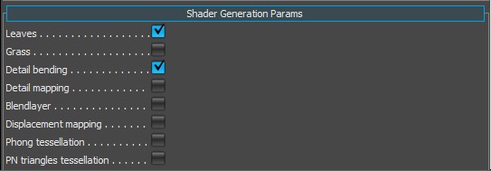
Pic5: Shader Generation Params
| Name | Description |
|---|---|
| Leaves | Uses a higher quality rendering pass on the asset |
| Grass | Uses a cheaper and faster rendering pass on the asset |
| Detail bending | Used for adding some random noise into the leaves movement |
| Detail mapping | Used for adding a detail map into the asset (not required for this tutorial) |
| Blend layer | Used for blending a second set of Diffuse and Normalmap textures (not required for this tutorial) |
| Displacement mapping | This is for applying tessellation to the asset (not required for this tutorial) |
| Phong tessellation | This is for applying tessellation to the asset (not required for this tutorial) |
| PN triangles tessellation | This is for applying tessellation to the asset (not required for this tutorial) |
Shader Params
As you may have noticed, we jumped this section in favor of the Shader Generation Params. We wanted to enable the Leaves options first to expose all the parameters that we need to configure the asset correctly. Enabling the Leaves parameter has exposed some additional parameters in the Shader Params section. It should now look like this.
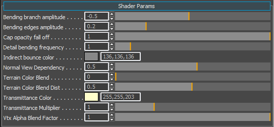
Pic6: Shader Params
| Name | Description |
|---|---|
| Bending branch amplitude | Detail bending control. Please see this page for information on detail bending. |
| Bending edges amplitude | Detail bending control. Please see this page for information on detail bending. |
| Cap opacity fall off | Controls how strongly vegetation polygons fade out when looking at them at a steep angle. This helps to disguise the plane shape of vegetation geometry. |
| Detail bending frequency | Detail bending control. Please see this page for information on detail bending. |
| Indirect bounce color | Keep this at the default value |
| Normal View Dependency | This value orients the normals towards the player and is useful for planes |
| Terrain Color Blend | If you enable UseTerrainColor in the Vegetation Editor for the object, this will absorb some of the color information of the underlying terrain where the vegetation object has been placed. This nice feature helps distant vegetation objects blend into the scene at distance Not useful for trees or large vegetation objects, as this is mean for ground hugging plants like grasses & weeds. |
| Terrain Color Blend Dist | This slider controls how close to the camera the 'absorption' of the terrain color will happen Not useful for trees or large vegetation objects, as this is mean for ground hugging plants like grasses & weeds. |
| Transmittance Color | This color is what you would get if you were to shine a light through the leaf and look at it from the other side. |
| Transmittance Multiplier | Controls how strong the translucency effect will be. |
| Vtx Alpha Blend Factor | Used for faking AO. You can control the strength of the blend effect with this slider. Technically we don't need to use this because of technology such as SSDO, SSAO and SVOGI, but sometimes it can help the asset by using this. |
Note that our Detail Bending setup will only be active as soon as we activate Bending in the vegetation editor later on.
In addition to the extra parameters exposed in the Shader Params section, it has also added a new texture map slot for the Opacity. Please link to this file and add it to the material.
<>Your_Project>\Assets\objects\natural\bushes\ground_cover_fern\ground_cover_fernbush_sss.tif
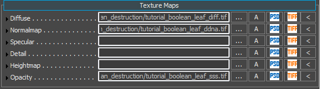
Pic7: Adding the SSS map to the material
We use the opacity map to control where the translucency effect (light passing through the surface) appears on the asset. This opacity map is a grey scale image that defines the foliage thickness and how much light can pass through from the backside.
Material Settings Id2 (trunk)
Here we only have to change the Surface Type. Go to Surface Type and select wood option from the drop down list.
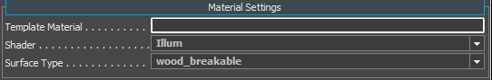
Pic8: Material settings
Since the trunk is meant to break when it receives damage, we control this breakability by assigning a specific Surface type wood_breakable. Within this surface type's params, is how we define how we control the breaking. To see how we do this, open the file below to see the differences between the standard mat_wood and the mat_wood_breakable surface types.
- <
Your_Project>\Libs\MaterialEffects\SurfaceTypes.xml
This file exists within the gamedata.pak file.
Lighting
Under the Lighting Settings, we find the color parameters. To be correctly in line with the PBS pipeline, we have to:
- set our "Diffuse Color" to pure white 255,255,255.
- set the "Specular Color" within the 40 - 60 range (dark grey).
- set the "Smoothness" slider to 255 max because we are controlling this value through the normalmap's alpha channel (ddna).
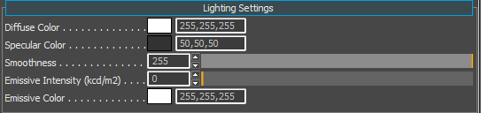
Pic9: Lighting settings
Texture Maps
The Texture Maps section should already have been filled out with our "Diffuse" (*_diff.tif) and our "Normalmap" (*_ddna.tif).
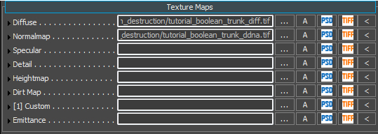
Pic10: Texture maps
Material Settings Id3 (tb_proxy)
Id3 was setup to be the Touch Bending proxy that is set to behave as the 'trigger' to activate the Touch Bending associated with this vegetation objects leaves. This material needs minor adjustments to be set correctly.
- Change the Shader to Nodraw (because this geometry is not to be shown, its an invisible trigger).
- Change the Surface Type to vegetation.
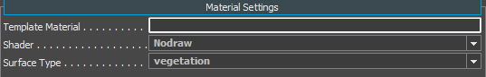
Pic11: Material Settings
There is nothing more to set on the tb_proxy material.
Material Settings Id4 (obstruct)
Id4 was setup to be the Obstruct proxy that is set to behave as the air resistance to control the way this object falls down. This material needs minor adjustments to be set correctly.
- Change the Shader to Nodraw (because this geometry is not to be shown, its an invisible trigger).
- Change the Surface Type to vegetation.
Pic12: Material Settings
There is nothing more to set on the obstruct.
Save the material
Inside the Material Editor, on the top toolbar, click the Save icon.

Pic13: Saving the material changes
Vegetation Editor
We will not go into an in-depth tutorial of the Vegetation Editor here. For more information of the usage of the Vegetation Editor, please refer HERE.
Go to the Tools menu option, and select the Vegetation Editor.

Pic13: Selecting the "Vegetation" tool
Click Add Group icon to add a new Vegetation Group and call it something appropriate (like "trees").

Pic14: Adding a Vegetation group
Click the Add Object icon to add a vegetation object to this group.
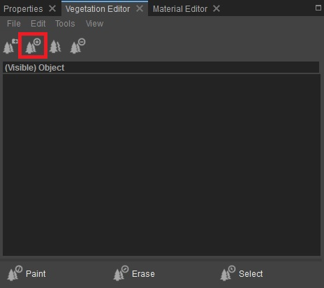
Pic15: Adding a vegetation object to the group
In the browse dialog, go to your folder where you saved the asset and select the tree
<Your_Project>\Assets\Objects\tutorial\vegetation\05\tree\boolean_destruction\tutorial_boolean_destruction
Now highlight the object that you just added to the category to select it:
- Enable the paint objects button to paint down lots of instances your tree asset, or
- To be more precise, don't select the paint objects button (so it's not active) and on the terrain Shift+LMB to place only 1 instance.
Jump In-Game (CTRL+G) to Test
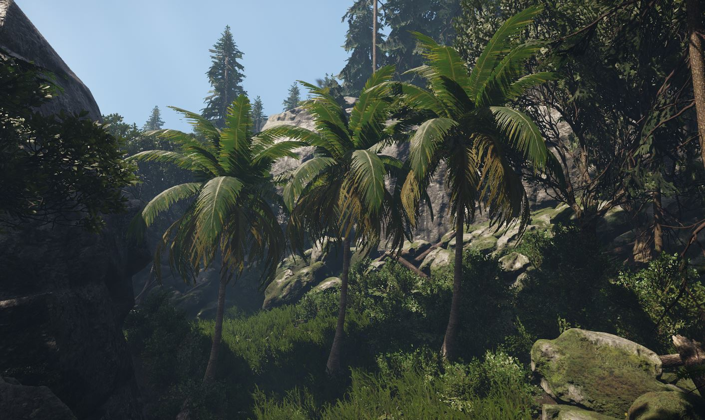
Pic16: Level Woodland, with boolean destruction palm tree added at the start
The below image is similar to the above but with the physics debug view on to see the active boolean capsules within the physics proxy (p_draw_helpers=1). The trees on the left and the right have been broken while the one in the center is about to break down. Note the physics capsule spawned at the breakpoint.
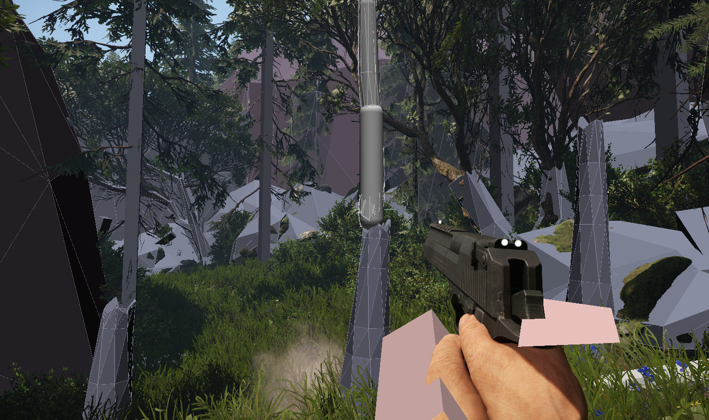
Pic17: Level Woodland with Physics debug view.